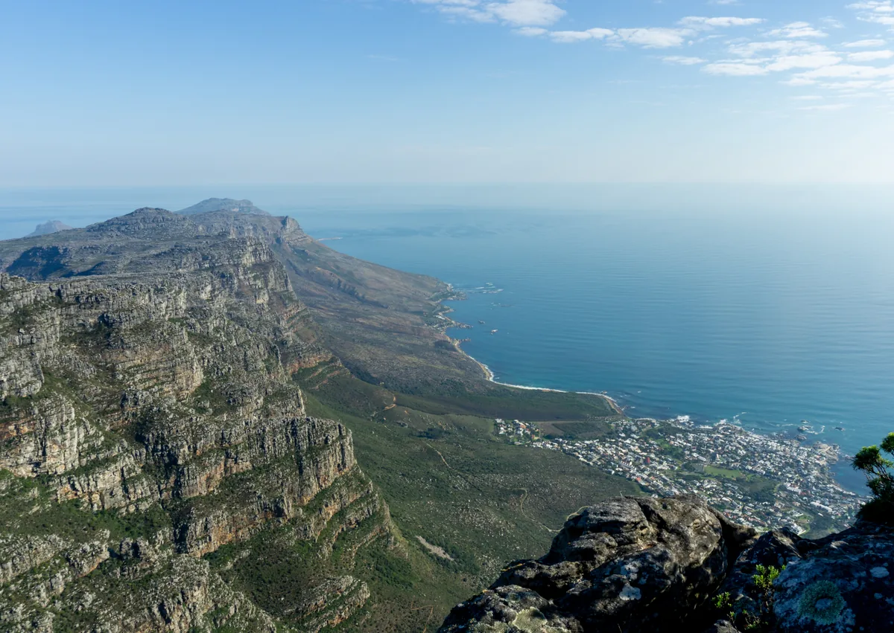
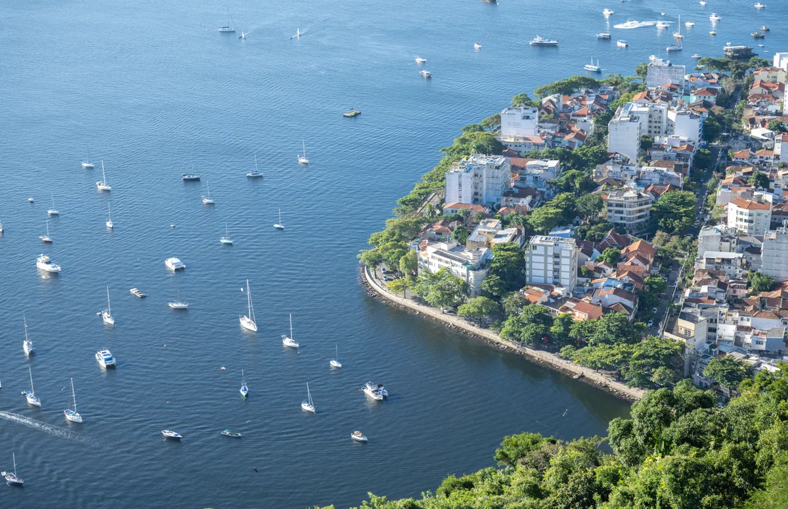
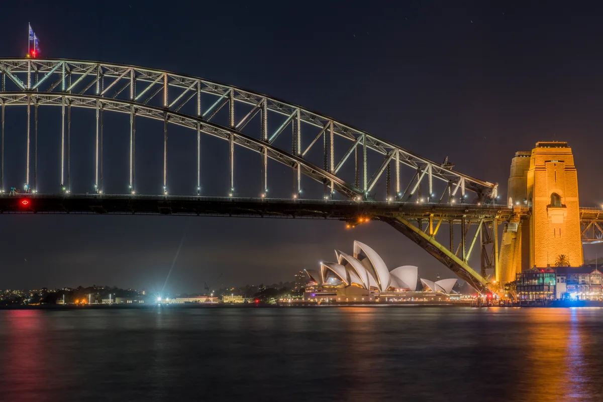
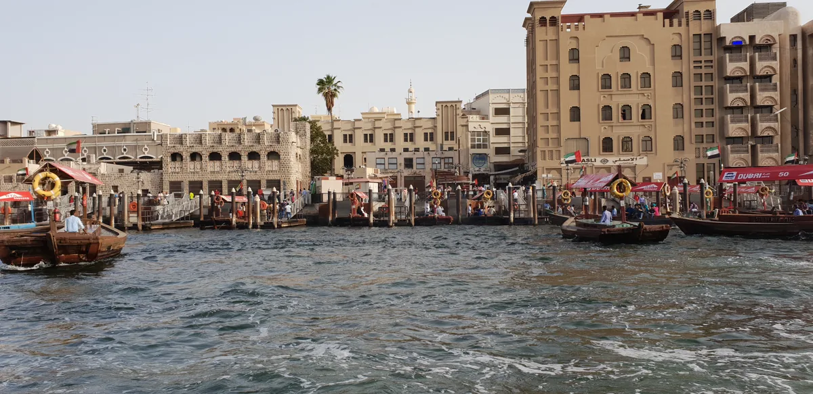

Cape Town, Rio, Sydney & Dubai
Review the exact photographs and their current product hero/card crops, credits and licences alongside each draft. Shared guide previews include the two-night outline and an owner-only panel showing the exact three-night template. No editorial or media approval is recorded here.
Cape Town
Editorial PASS for revised candidate · owner approval pending
English v4 · place:Q5465 · commons:126494271 · CC BY-SA 4.0
Cape Town combines a working harbour, neighbourhood history and mountain scenery. A short stay needs flexibility: the cableway and island visit depend on conditions, and not every outing is connected by a simple city walk.

Sumit Surai / Wikimedia Commons / CC BY-SA 4.0 · resized to WebP; cropped for display
Individual source file · CC BY-SA 4.0 · taken 2018-07-17
The individual file describes Camps Bay viewed from Table Mountain; the visible coastal neighbourhood and mountain chain match that specific Cape Town viewpoint. This is not a City Bowl, Robben Island or airport photograph.
Historical photograph from July 2018. Clear weather and vegetation in this image are not forecasts or evidence of current cableway access. The proposed hero reduces the large sky area.
Exact copy corrections and verification limits
- Rechecked the explicit MyCiTi airport suspension against the operator; old A01 timetable is not usable evidence.
- Added the museum’s own tour page and conditional weather/demand limits; no tour times or prices copied.
- MyCiTi suspension notice is current source evidence, not a service status guarantee for a future trip. Recheck before publication and travel.
- Cableway weather widgets can be stale; only the general weather-dependent service rule is used.
- Bo-Kaap page includes unrelated Newlands template text; only its actual Bo-Kaap introduction is used.
Modifications, responsive variants and pins
Original file unchanged. Lossy WebP resizing without upscaling or retouching; responsive derivatives retain original aspect ratio. CSS object-fit cover uses the exact proposed focal point for desktop/mobile hero and card. Retain the recorded author, source, licence link and change notice. CC BY-SA derivatives retain the applicable share-alike licence; the Rio CC0 source has no share-alike requirement. No endorsement is implied.
Original dimensions: 4000 × 2836; no enlargement.
WebP variants: 640 × 454 (48,062 bytes), 1200 × 851 (160,680 bytes), 1920 × 1361 (381,312 bytes).
Original SHA256: 3451e46c3a7c13012c860fd09d48791282e045361a94285c79a977cc86ddd5bb
Content digest: 575e307944cd931442dddac18d907ec0e3fd534cd0b4ecd7b5fa590597d3cf34
Rio de Janeiro
Editorial PASS for revised candidate · owner approval pending
English v4 · place:Q8678 · commons:133796307 · CC0
Rio combines beach neighbourhoods with hilltop viewpoints and a city centre that needs its own outing. Build your stay around a few journeys, keeping weather-sensitive views flexible and checking the return from each attraction.

Wilfredor / Wikimedia Commons / CC0 · resized to WebP; cropped for display
Individual source file · CC0 · taken 2023-06-03
Individual source description identifies Urca and Botafogo Bay, Rio de Janeiro; the waterfront geometry and boats are visible in the source. No Christ statue, Sugarloaf summit, Copacabana beach or airport is substituted for the photographed subject.
Historical aerial view from June 2023. Boats and waterfront access shown are not evidence of current transport, swimming conditions or bookable tours. This clean source replaces the excluded watermarked photograph.
Exact copy corrections and verification limits
- Replaced the unsupported port-growth history with the operator-backed estate/art-school context of Parque Lage. Its restoration closure is short-dated, not a permanent city-history claim.
- Updated VLT references to current Motiva operator URLs and retained separate GIG, SDU and unverified RRJ legs. No through-fare or airport metro assumed.
- Added Riotur’s distinct Selarón/centre and beach geography; no airport transfer is presented as included.
- RRJ ground transport is unverified; this candidate must not claim complete all-airport guidance.
- Parque Lage source retains generic interior information below its explicit restoration closure notice; the closure takes precedence. No courtyard/interior is included.
- Some tourism pages return only navigation; Riotur and current operator evidence support the limited place/transport copy. No live fares, services or safe-route rating verified.
Modifications, responsive variants and pins
Original file unchanged. Lossy WebP resizing without upscaling or retouching; responsive derivatives retain original aspect ratio. CSS object-fit cover uses the exact proposed focal point for desktop/mobile hero and card. Retain the recorded author, source, licence link and change notice. CC BY-SA derivatives retain the applicable share-alike licence; the Rio CC0 source has no share-alike requirement. No endorsement is implied.
Original dimensions: 7778 × 5030; no enlargement.
WebP variants: 640 × 413 (63,346 bytes), 1200 × 776 (220,130 bytes), 1920 × 1242 (556,550 bytes).
Original SHA256: c3b104f19dfbf4376633dcd11246d44397b0d53c92ec770a1f0634c77cfa6c7a
Content digest: 195561a2abe6f8eb296e6b5858c5207d747986ba7ebffad5a6192ad65889bce2
Sydney
Editorial PASS for revised candidate · owner approval pending
English v4 · place:Q3130 · commons:73107560 · CC BY-SA 4.0
Sydney’s harbour gives a short stay a clear focus: the Opera House, garden, bridge and The Rocks can anchor your plan. Choose a base and airport connection before adding more distant outings or paid experiences.

peter abery (Poidabro) / Wikimedia Commons / CC BY-SA 4.0 · resized to WebP; cropped for display
Individual source file · CC BY-SA 4.0 · taken 2018-03-03
The individual source names Blues Point Reserve and both Sydney landmarks. Its author field is Poidabro; embedded author metadata names peter abery, both retained in the proposed credit. The Opera House sails and bridge structure are directly identifiable.
Long-exposure night photograph from March 2018. Lighting is historical; it does not promise a current illumination event, performance, pedestrian access or weather. Hero crop keeps the Opera House and bridge structure; it may omit the bridge flag.
Exact copy corrections and verification limits
- Clarified that the airport station fee is separate from normal Opal travel caps and has its own weekly cap for Opal/contactless. No amount copied.
- Replaced the imminently stale WSI opening-date sentence with an explicit opening/service-notice check. No SYD instructions or direct metro service is implied for WSI.
- Replaced the empty Tubowgule page with the Opera House’s substantive First Nations source; no event dates or attendance promise added.
- WSI opening is imminent at review time; its operator/service status must be rechecked before publication. The candidate quotes no opening date and promises no current flight or metro operation.
- Several Destination NSW pages were readable only as indexed primary text after 405 responses. Stable place geography is used; hotel listings and prices are not evidence.
- Airport station access fees have separate rules and a separate weekly cap; ordinary daily/weekly caps do not include them.
Modifications, responsive variants and pins
Original file unchanged. Lossy WebP resizing without upscaling or retouching; responsive derivatives retain original aspect ratio. CSS object-fit cover uses the exact proposed focal point for desktop/mobile hero and card. Retain the recorded author, source, licence link and change notice. CC BY-SA derivatives retain the applicable share-alike licence; the Rio CC0 source has no share-alike requirement. No endorsement is implied.
Original dimensions: 7360 × 4912; no enlargement.
WebP variants: 640 × 427 (27,594 bytes), 1200 × 801 (79,512 bytes), 1920 × 1281 (181,270 bytes).
Original SHA256: 0b1d81c2b04b420c23c77c82819ed8c2f01a9b25aa6b774f1eb33b515a003fc6
Content digest: 2f4cfd353729d6ba08e76a192d626fce2ca2ac262e184f2c3349fa62631ec2ff
Dubai
Editorial PASS for revised candidate · owner approval pending
English v4 · place:Q612 · commons:68665373 · CC BY-SA 4.0
Dubai is more useful as two focused outings than a list of distant landmarks: creekside heritage in Bur Dubai and the modern skyline around Downtown. Decide which paid interiors you want before choosing a base and calculating local journeys.

Vedaant Jamaiyar / Wikimedia Commons / CC BY-SA 4.0 · resized to WebP; cropped for display
Individual source file · CC BY-SA 4.0 · taken 2018-04-13
Individual source identifies the old Dubai Creek boarding scene. Visible traditional boats and creekside waterfront support that identity. The source calls the boats dhows; the guide uses the neutral passenger-boat description rather than claiming a specific service or fare.
Historical photograph from April 2018. It is a creek transport scene, not a Burj Khalifa skyline or a current RTA service guarantee. Advertising, boarding arrangements and buildings may have changed. The licensed source carries no architectural-rights warning; excluded skyline sources are not used.
Exact copy corrections and verification limits
- Retained DXB Terminal 1/3 versus DWC bus/taxi distinction; conflicting interchange examples on the airport page are not prescribed.
- Added the official museum map and a conditional exterior creek alternative if entry or a pavilion is unavailable. No whole-museum closing day inferred from an older pavilion-closure marker.
- DWC airport copy mixes interchange examples and contains a misleading generic airport-station sentence. RTA map and bus/taxi guidance support only the scoped connection advice.
- Fresh museum visit page could not be fetched. The official museum brochure verifies geography/content, not current pavilion access or a recurring closure day.
- Some Dubai tourism pages expose only headings directly; source-backed indexed primary text is used for stable history and district facts.
Modifications, responsive variants and pins
Original file unchanged. Lossy WebP resizing without upscaling or retouching; responsive derivatives retain original aspect ratio. CSS object-fit cover uses the exact proposed focal point for desktop/mobile hero and card. Retain the recorded author, source, licence link and change notice. CC BY-SA derivatives retain the applicable share-alike licence; the Rio CC0 source has no share-alike requirement. No endorsement is implied.
Original dimensions: 4032 × 1960; no enlargement.
WebP variants: 640 × 311 (46,566 bytes), 1200 × 583 (145,352 bytes), 1920 × 933 (342,718 bytes).
Original SHA256: 4d01b8addac6a22ef44ec6c277fc841b857c5d436ab885a57eff46e0c54b24d8
Content digest: c625fc45fe2c8b359e7a65d385dc1964fab0017a864684311b515e9697de6fad
Approval and freshness
Approval must name the four pinned English v4 drafts, sources, identities, itinerary order and freshness requirements, and these four exact image/crop/credit proposals. Cape Town, Sydney and Dubai use CC BY-SA 4.0; Rio uses CC0. Share-alike is not required by Rio’s CC0 dedication, but its courtesy credit and source are retained.
WSI opening/service information needs a fresh check by 26 October 2026 and before publication. Other operational information is due 6 November 2026; general guidance 21 January 2027. RRJ transport remains explicitly unverified.
No public routes, image selections, prices or sitemap entries were created. Exact approval wording · Editorial pins · Media pins · Local verification